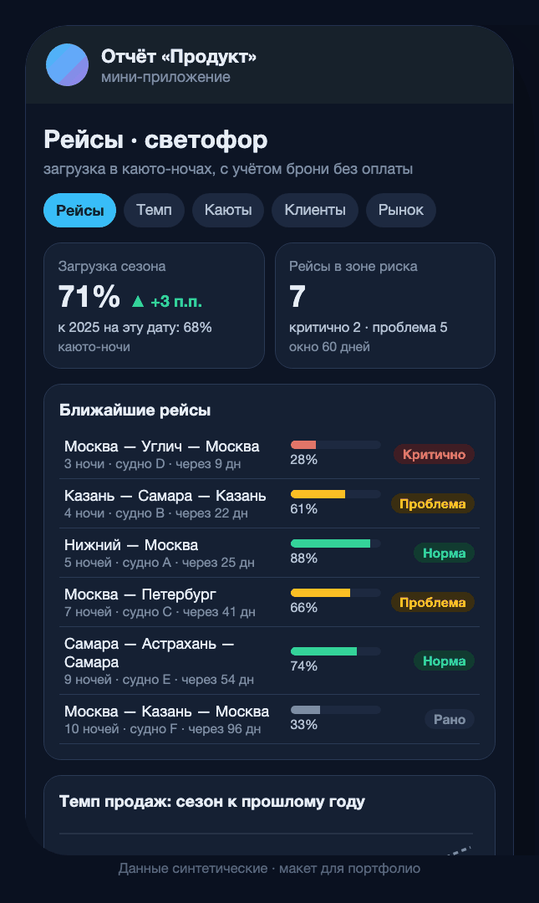

Рабочий кейс · 3 из 13
Продуктовая аналитика рейсов
- SQL
- Superset
- Google Apps Script
- Node.js
- Telegram Mini App
- RFM
Компания: туроператор речных круизов. Названия, рейсы, конкуренты и цифры скрыты; описаны методика и решения.
 Интерфейс воспроизведён на синтетических данных: реальные цифры и названия не показываются.
Интерфейс воспроизведён на синтетических данных: реальные цифры и названия не показываются.

Задача
Продукт туроператора — рейс: судно, маршрут, даты, каюты разных категорий. Нужно заранее видеть, какие рейсы продаются хуже нормы, сравнивать сезон с прошлым годом и с конкурентами и понимать, кто покупает.
Решение
Данные. SQL-выгрузки из системы бронирования (через Superset): рейсы, маршруты, каюты и категории, заявки и оплаты, прайс и свободные каюты. Только агрегаты, без ФИО и контактов.
Ключевые метрики и методика:
- Загрузка в каюто-ночах: проданные каюты × ночи / (каюты судна × ночи). Календарь «судно × ночь» корректно учитывает рейсы, которые продаются частями, и сквозные рейсы.
- Светофор рейса: «Критично» (загрузка ≤70% и ≤14 дней до отплытия), «Проблема» (<70% и ≤60 дней), «Норма» (≥70% с учётом брони без оплаты), дальние рейсы — «рано». Методика сверена с отчётом партнёра: расхождение около 1 п.п.
- Темп продаж YoY: сезон на сегодня против прошлого сезона на ту же дату. Прогноз не строится, если база прошлого года слишком мала или перекос слишком большой, чтобы не показывать шум.
- Глубина бронирования: дата заявки против даты отплытия, кривая продаж по категориям кают.
- Клиенты: RFM-сегментация и риск оттока по всей истории; по сезону и судну — клиенты сезона, повторные, купившие следующий сезон; повторные покупки по возрасту; портрет пассажира (возраст и регион — только агрегатами).
- Конкуренты: прайс, загрузка и свободные каюты по сопоставимым судам.
- Ограничения записаны явно: «маржа» в системе — это комиссия продавца, а не прибыль рейса; экономику рейса не считаем, пока нет затрат.
Продукт: ночное обновление (четыре части, каждая сверяется с проверочной выгрузкой из Superset), строка-вывод над карточками сводки («что важно сейчас»), отчёт в Telegram Mini App (вход по подписи Telegram и белому списку), еженедельная сводка в боте и сигнал, когда рейс переходит в «Критично». Сборка отчёта — общий JS-модуль для Apps Script и Node, поэтому расчёты проверяются тестами локально до выпуска.
Результат
- Отдел продаж видит проблемные рейсы в окне 60 дней до отправления и успевает подключить продвижение.
- Единая методика загрузки для разных форматов рейсов, совпадающая с отчётом партнёра.
- 37 версий за первый месяц: расширены клиенты и конкуренты, отчёт адаптирован под телефон, добавлен вход из браузера — по ревью проекта и отзывам пользователей.